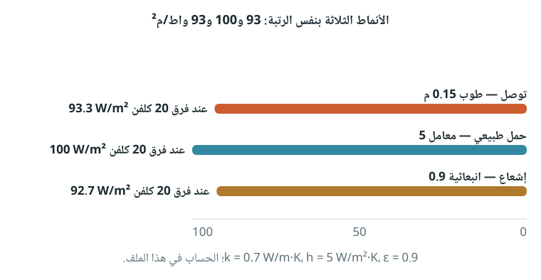

التوصل والحمل والإشعاع: أيّها يحكم جداراً عادياً؟
Conduction, convection, radiation: which dominates?
بفرق 20 كلفناً، ينقل جدار طوبي 0.15 م نحو 93 واط/م² بالتوصل، والهواء الساكن 100 واط/م² بالحمل، والسطح 93 واط/م² بالإشعاع — الثلاثة بنفس الرتبة، فلا يصح إهمال أحدها.
لكل نمط نقل حرارة معادلة بسيطة. التوصل: q = k·ΔT/L، وطوب بموصلية 0.7 واط/م·كلفن وسماكة 0.15 م يعطي 93 واط/م² عند فرق 20 كلفناً. الحمل الطبيعي في الهواء بمعامل 5 واط/م²·كلفن يعطي 100 واط/م² لنفس الفرق. الإشعاع من سطح عند 20 مئوية إلى محيط عند 0 مئوية بانبعاثية 0.9 يعطي نحو 93 واط/م² بحساب ستيفان-بولتزمان. التطابق ليس مصادفة: في المباني والأجهزة المنزلية تكون الأنماط الثلاثة في نفس الرتبة، ولهذا يخطئ من يحسب واحداً ويُهمل الباقي ثم يستغرب فرق الحساب عن القياس.
الآلية
كيف يحدث الأمر على مستوى الجسيمات أو المتغيّرات المباشرة
التوصل يحتاج مادة: الطاقة تنتقل بتصادم الجزيئات ولا تحتاج انتقال كتلة. الحمل يحتاج سائلاً متحركاً يحمل الطاقة معه، وقوته تتبع سرعة التدفق. الإشعاع لا يحتاج وسيطاً إطلاقاً: موجات كهرومغناطيسية تنطلق من أي جسم حرارته فوق الصفر المطلق، وتُحسب بالحرارة المطلقة للأس الرابع.
الأرقام والوحدات
العلاقات والوحدات والنطاقات العددية التي تسند الشرح
التوصل: 0.7/0.15 × 20 = 93.3 واط/م². الحمل: 5 × 20 = 100 واط/م². الإشعاع: 0.9 × 5.6704e-8 × (293⁴ − 273⁴) = 92.7 واط/م². ومجموع مسار جدار كامل يشمل مقاومتي الفيلمين فتصير U أقل من أي نمط منفرد — وهذا هو الفرق بين «معامل المادة» و«معامل التجميع».
الفرق الدقيق
المفهوم الملتبس الذي يُخلَط به، وأين ينفصلان
الإشعاع لا يُلغى بالعزل التقليدي لأنه يمرّ عبر الفراغ، ولهذا تُستخدم الأغشية العاكسة في الأسطح. والحمل لا يُلغى بزيادة السماكة لأنه يحدث على السطح لا داخله. كل نمط له علاج مختلف، ويعالج من لا يفرّق بينها المشكلة بالطريقة الخطأ.
حدود التعريف
أين ينكسر التعريف أو النموذج وما الذي لا يفسّره
معامل الحمل 5 واط/م²·كلفن قيمة نموذجية لهواء ساكن؛ يرتفع إلى عشرات أو مئات عند التدفق القسري. والانبعاثية 0.9 للمواد غير المعدنية اللامعة؛ المعادن المصقولة قد تنزل إلى 0.05 فتنقل إشعاعاً أقل بكثير. والفرق الحراري المحدود 20 كلفناً شرط للحساب كما هو.

| الكمية | القيمة | المصدر |
|---|---|---|
| تدفق التوصل في جدار طوبي 0.15 م | 93.3 W/m² | [1] |
| تدفق الحمل الطبيعي بمعامل 5 | 100 W/m² | [2] |
| تدفق الإشعاع لسطح عند 20 مئوية | 92.7 W/m² | [1] |
المصادر
- 1 OpenStax, College Physics 2e — Heat Transfer Methods — OpenStax. openstax.org/books/college-physics-2e/pages/14-4-heat-transfer-methods · اطُّلع عليه 2026-11-16
- 2 OpenStax, College Physics 2e — Radiation — OpenStax. openstax.org/books/college-physics-2e/pages/14-7-radiation · اطُّلع عليه 2026-11-16
راجعه: مراجعة آلية — ديوان المعرفة (أرقام محسوبة + مصادر متحققة) 2026-11-16 · 2026-11-16 · آخر تحديث 2026-11-16